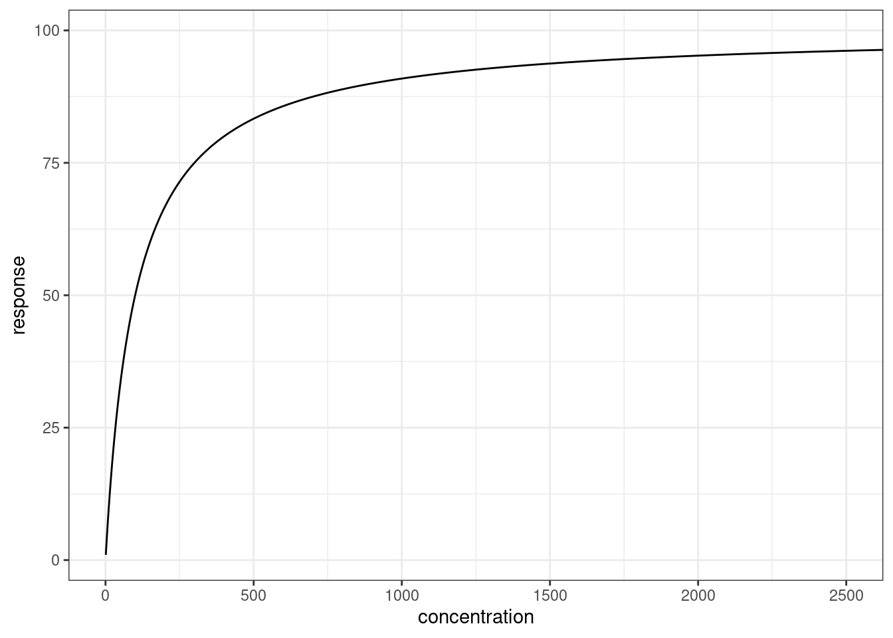
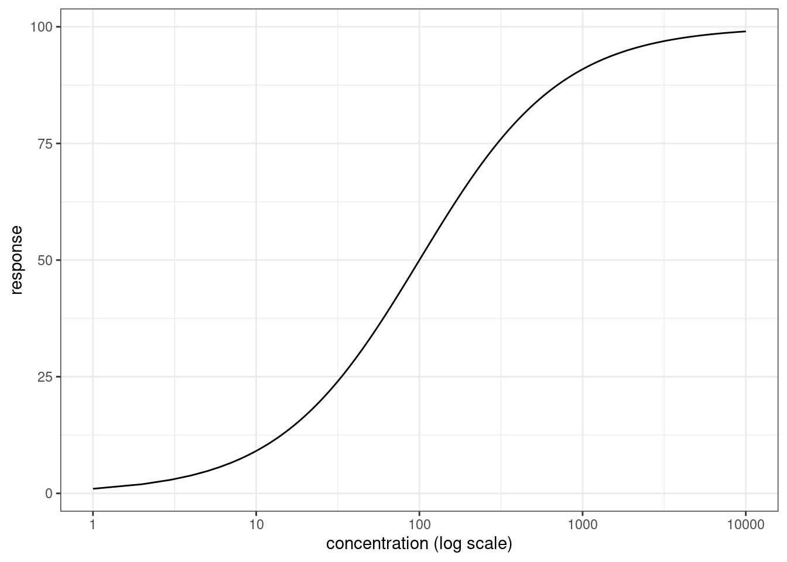

![]()
I’m back at work after my all-too-brief summer vacation, and thankfully it’s not too busy since everyone else has been on break too. It’s given me a bit of breathing room to do some reading for professional development purposes, and – since I find it helps me a lot to write up my notes – it’s time for another pharmacometrics post. This time around I’m going to talk about the “Emax model” that is often used in exposure-response analyses. The Emax model is based on the Hill equation, and is used to model a continuous-valued “effect” or “response” that is observed when a drug is administered.
The model
To introduce the basic model, let’s have some notation:
- \(E\) denotes the observed biological effect, or response. In the context of this kind of model, the response is a continuous variable bounded below at 0 and has some theoretical upper bound corresponding to the maximum possible effect, denoted \(E_{max}\).
- \(C\) denotes the plasma concentration (typically the molar concentration, in this context) of the molecule that produces the effect, either the drug itself or a metabolite.
The goal in this exercise is to model the effect \(E\) as a function of the concentration \(C\). It is therefore a pharmacodynamic model (modelling the effect of a drug at a given concentration) rather than a pharmacokinetic model (modelling the concentration of a drug when administered in a particular dose). Ignoring the statistical issues around measurement error etc (errors are typically assumed to be log-normally distributed), here’s what the Emax model asserts about the relationship between \(E\) and \(C\):
\[ E = E_{max} \frac{C^n}{{EC}_{50}^n + C^n} \]
There are three parameters in this model:
- As mentioned earlier, \(E_{max}\) is the maximum value of the effect
- \({EC}_{50}\) is the concentration that produces a 50% of the maximum effect. That is, it refers to the concentration \(C\) at which \(E = E_{max} / 2\))
- \(n\) is the Hill coefficient, which controls the steepness of the curve. In the “simple” model \(n\) is fixed at 1, but in practice that often doesn’t work.
This is a model in which the effect \(E\) increases monotonically but with constantly decreasing slope, and asymptotically approaches \(E_{max}\) as \(C \rightarrow \infty\). More precisely, it’s a model in which \(E\) is described by a three-parameter logistic function of \(\ln C\),
\[ E = \frac{E_{max}}{1 + \exp(-n(\ln C - \ln EC_{50}))} \] where \(EC_{50}\) is a location parameter that shifts the curve (expressed as a function of \(\ln C\)) left or right, \(n\) is a gain parameter that controls the steepness of the curve, and \(E_{max}\) is the maximum height of the logistic curve.
After a little rearrangement, we can also express this relationship as follows:
\[ \ln \left(\frac{E}{E_{max} - E} \right) = n(\ln C - \ln EC_{50}) \]
Here’s what it looks like:
# define the emax model
emax <- function(conc, emax, ec50, n = 1) {
(emax * conc^n) / (ec50^n + conc^n)
}
# load packages
library(ggplot2)
library(tibble)
# a fake data set
dat <- tibble(
concentration = seq(1, 10000),
response = emax(concentration, emax = 100, ec50 = 100)
)
# plot the data on linear and logarithmic x-axis scales
p <- ggplot(dat, aes(concentration, response)) + geom_path() + theme_bw()
p + coord_cartesian(xlim = c(0, 2500))
p + scale_x_log10() + xlab("concentration (log scale)")

This is not the only version of the Emax model. For example, if there is some baseline level of effect (i.e., the curve starts at \(E_0\) not 0), then we would have a relationship of the following form:
\[ E = E_0 + E_{max} \frac{C^n}{{EC}_{50}^n + C^n} \]
Along the same lines, notice that this is a model that implicitly assumes that the drug is an agonist: increasing the concentration \(C\) increases the effect \(E\). There is also a version that can be use for drugs that decrease the effect:
\[ E = E_0 - I_{max} \frac{C^n}{{IC}_{50}^n + C^n} \]
where again \(E_0\) is the baseline effect, and the inhibition effect is described in terms of a maximum inhibition \(I_{max}\) and the concentration that produces 50% of the maximum inhibition \({IC}_{50}\).
For the purposes of this post I’m just going to consider the basic model.
Why this model?
Looking at this from the perspective of a scientist with a strong statistics and modelling background but who is still relatively new to pharmacometrics, I completely understand the value of the three-parameter logistic model: it’s used in many different disciplines, and I’ve encountered it before in psychometric contexts (and others). What wasn’t immediately clear to me is why it is considered sensible to model the effect \(E\) of a drug as a logistic function of the log-concentration \(\ln C\). If I’ve learned nothing else from my long career in science that has somehow bounced around from discipline to discipline, it’s that if you don’t understand the theoretical foundations that underpin why researchers in the field use this specific statistical model and not that other possible statistical model, you’ll eventually make a silly mistake. I’ve made a lot of silly mistakes in my life and would like to minimise the chances of making even more.
With that in mind, I turned to Pharmacokinetic and Pharmacodynamic Data Analysis (5th ed) by Johan Gabrielsson and Daniel Weiner, which is the book I’ve been reading at work to try to get myself up to speed on these kinds of things. It turns out that the basic ideas here can be derived from the law of mass action, which I vaguely recall from my long-disused undergraduate chemistry classes, and Chapter 3 of the book shows how this is done. What follows are my own notes based on that section of the book, and as is traditional for such acknowledgements I note that I’ve lifted the core ideas from the authors, but if there are mistakes then yeah those are probably mine alone.
So here goes.
Applying the law of mass action
First, let’s start by switching notation slightly. Let \(R\) refer to a receptor, a macromolecule that is involved in signalling within biological systems (e.g., cell surface receptors). Receptors can bind to chemical messengers (e.g., ligands outside a cell), that triggers some physiological response (e.g., a messenger is released inside a cell). In the context of the Emax model, we’re implicitly assuming a mechanism of action in which the drug (or metabolite) is an agonist molecule \(A\) that can bind to the receptor (forming the compound molecule \(AR\)), and trigger some response that produces the drug effect. Since this is a chemical reaction that can go both ways, we can denote it as follows:
\[ A + R \ \leftrightharpoons \ AR \]
The concentrations of the receptor \(R\), the agonist molecule \(A\), and the compound \(AR\) are denoted \([R]\), \([A]\) and \([AR]\) respectively.
Okay, so now for some science rather than mere notation. The law of mass action tells us that the rate of the forward reaction \(A + R \rightarrow AR\) is proportional to the product of the concentrations of the two reactants, \([A] \times [R]\), with \(k_1\) denoting the constant of proportionality. Similarly, the rate of the backward reaction \(AR \rightarrow A + R\) is proportional to the concentration of the compound \([AR]\), with proportionality constant \(k_{-1}\). This gives us the differential equation to describe how the concentration of the compound \(AR\) changes over time:
\[ \frac{d}{dt} [AR] \propto k_1 [A][R] - k_{-1} [AR] \]
When this reaction is at equilibrium \(d/dt [AR] = 0\) by definition, so it follows that \(k_1 [A][R] = k_{-1} [AR]\) and therefore
\[ \frac{[A][R]}{[AR]} = \frac{k_{-1}}{k_1} \overset{def}{=} K_d \] where \(K_d\) is referred to as the equilibrium dissociation constant for this reaction and defined as the ratio of the rate constants for the forward and backward reactions.
Next, we define \([R_t]\) to be the total concentration of receptors regardless of whether they are bound or unbound to the agonist:
\[ [R_t] \overset{def}{=} [R] + [AR] \]
With this definition we can do the following:
\[ \begin{array}{rrcl} & \displaystyle\frac{[A][R]}{[AR]} &=& K_d \\ \implies & \displaystyle\frac{[A]([R_t] - [AR])}{[AR]} &=& K_d \\ \implies & [R_t] - [AR] &=& \displaystyle\frac{[AR]}{[A]} K_d \\ \implies & [R_t] &=& [AR] \left(1 + \displaystyle\frac{K_d}{[A]} \right)\\ \implies & \displaystyle\frac{[R_t]}{[AR]} &=& \displaystyle\frac{[A] + K_d}{[A]}\\ \implies & \displaystyle\frac{[AR]}{[R_t]} &=& \displaystyle\frac{[A]}{[A] + K_d} \end{array} \]
In this expression \([AR]/[R_t]\) is referred to as the fractional occupancy of the total receptor pool. That is, it describes the proportion of the receptors that are currently bound to the agonist molecule.
Motivating a simple model
At this point we have the something that we can turn into theoretical model for the effect of a drug, but we need to impose additional assumptions in order to flesh it out. One proposal is that the effect \(E\) of the drug is proportional to the fractional occupancy \([AR]/[R_t]\) of the relevant receptor pool. That is,
\[ E = \alpha \frac{[AR]}{[R_t]} \] for some proportionality constant \(\alpha\). Now, noting that the maximum possible value of \([AR]\) is \([R_t]\), it follows that the maximum possible value for \(E\) is in fact \(\alpha\), so it makes more sense to denote it as \(E_{max}\):
\[ E = E_{max} \frac{[AR]}{[R_t]} \]
and by substitution back into the earlier equation we obtain something that is beginning to look a lot like the Emax model with a Hill coefficient \(n = 1\):
\[ E = E_{max} \frac{[A]}{[A] + K_d} \]
Incorporating signal amplification
It comes as little surprise to discover that the theoretical model just derived is a bit of an oversimplification. Taken at face value, you’d be tempted to assume that the value of the \({EC}_{50}\) parameter in an Emax model is equal to the value of the equilibrium dissociation constant \(K_d\) for the reaction between a ligand \([A]\) and receptor \([R]\). This is not generally the case, because biology is more complicated than this simple model suggests. In many situations we observe some kind of signal amplification, in which you get a much stronger response than you’d expect on the basis of this simple response. One way to frame it is like this. We consider the fractional occupancy of the receptor \([AR]/[R_t]\) to be a stimulus,
\[ \mbox{stimulus} = \frac{[A]}{[A] + K_d} \] and this stimulus triggers a nonlinear response (equivalent to our effect \(E\) in the previous notation) that rises quickly to some asymptote level:
\[ \mbox{response} = \frac{\mbox{stimulus}}{\mbox{stimulus} + \beta} \]
In this expression \(\beta\) denotes the value of the stimulus that produces 50% of the maximum response.
As it turns out, this doesn’t affect the overall structure of the model predictions, since
\[ \begin{array}{rcl} E &=& \displaystyle\frac{\left(\displaystyle\frac{[A]}{[A] + K_d}\right)}{\left(\displaystyle\frac{[A]}{[A] + K_d} \right) + \beta} \\ &=& \displaystyle\frac{[A]}{[A] + ([A] + K_d) \beta} \\ &=& \displaystyle\frac{[A]}{(\beta + 1) [A] + \beta K_d} \\ &=& (\beta + 1)^{-1} \displaystyle\frac{[A]}{[A] + \beta (\beta + 1)^{-1} K_d} \\ \end{array} \]
In other words, we again have something that looks like Emax model (with \(n=1\)),
\[ E = E_{max} \frac{[A]}{{EC}_{50} + [A]} \]
but this time \(E_{max} = 1/(\beta + 1)\) and \(EC_{50} = (\beta/(\beta + 1)) \times K_d\). Since the \(\beta\) quantity is interpreted as a fraction (i.e., it’s on the same scale as the fractional occupancy \([AR]/[R_t]\)), the net effect is that under a model like this one what we should expect to see is \(EC_{50} < K_d\). In the event that there is a stimulus-response cascade at play (e.g., the initial response is the stimulus for another response, etc, ultimately leading to an effect), the overall shape of the function would remain the same.
Interpreting the Hill coefficient
Okay, so at this point we have a sensible motivation for using an Emax model in an exposure-response analysis (at least in some situations). What we don’t have is an explanation of the Hill coefficient \(n\). The Gabrielsson & Weiner book doesn’t say much about this, other than to note that:
The exponent \(n\) does not have a direct biological interpretation and should be viewed as an extension of the original \(E_{max}\) model to account for the curvature [i.e., steepness of the logistic function]. It provides a further degree of flexibility in the sensitivity of the response-concentration relationship.
That doesn’t mean it’s an arbitrary parameter though. It was introduced by Hill originally to describe cooperative binding in the oxygen-haemoglobin relationship. Essentially, the derivation earlier is based on the assumption that every time a drug molecule binds to a receptor it’s entirely independent of the all other binding events. That doesn’t have to be the case. Quoting from the linked Wikipedia page:
Cooperative binding occurs in a molecular binding system where two or more ligand molecules can bind to a receptor molecule. Binding can be considered “cooperative” if the actual binding of the first molecule of the ligand to the receptor changes the binding affinity of the second ligand molecule. The binding of ligand molecules to the different sites on the receptor molecule do not constitute mutually independent events. Cooperativity can be positive or negative, meaning that it becomes more or less likely that successive ligand molecules will bind to the receptor molecule.
That makes sense to me. It’s not a situation covered by the derivation I considered at the start, because if a receptor can bind to two or more ligands you’d need to consider bound-receptor compounds like \(AAR\) and, \(AAAR\) (to use an oversimplified notation) as well as \(AR\), and then your model would need to include reactions like \(AR + A \leftrightharpoons AAR\) and their associated \(K_d\) values. The derivation above is – like any such excercise – a simplification of the real situation. So while the Hill coefficient \(n\) doesn’t immediately fall out of a simplified model, it’s not too hard to see how cooperative binding could give rise to logistic curves (on the log-concentration scale) with steeper slopes than those observed with \(n = 1\).
Summary
Okay, so now the Emax model makes more sense to me. That’s all I was aiming for, and it’s 6pm now so I’m quitting work for the day!
Reuse
Citation
@online{navarro2024,
author = {Navarro, Danielle},
title = {Notes on the {Emax} Model},
date = {2024-01-09},
url = {https://blog.djnavarro.net/posts/2024-01-09_emax-models},
langid = {en}
}